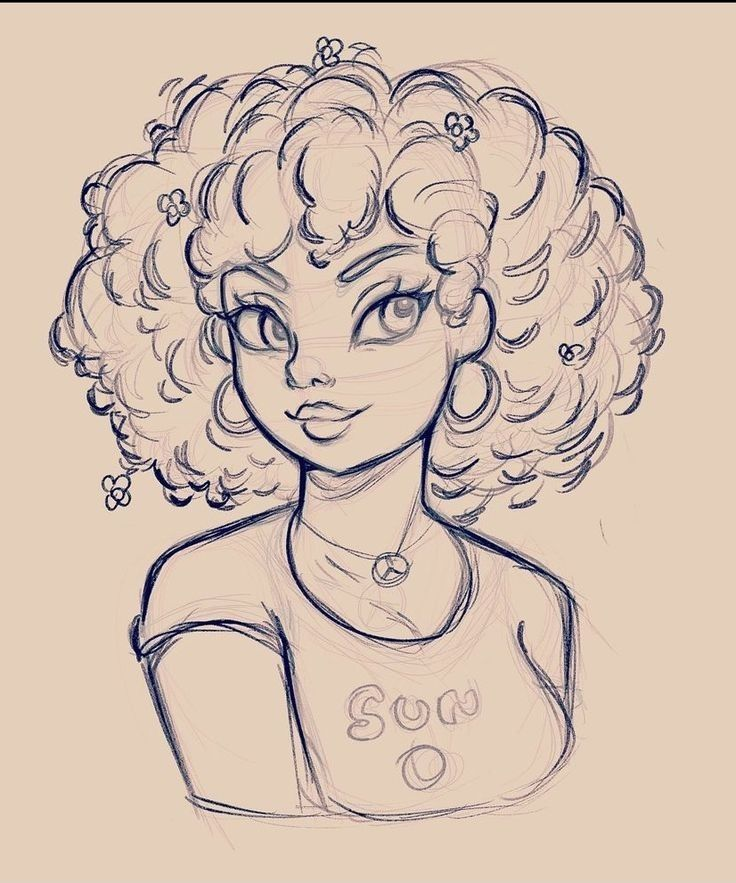

Aos meus 12 anos, vendo um vídeo no yotube sobre o jogo Mario, tentei desenhar os personagens do jogo, até eu mostrar para minha irmã os desenhos, ela me disse que eu tinha talento e que eu poderia ser um designer de games. Eu nem sabia o que era um "Designer de games" só sabia que tinha que desenhar personagens de jogo pelo nome da profissão kkkk, foi então que comecei a pesquisar sobre o assunto.
Me iteressei pela área e decide que focaria nesse objetivo, mas minha familía é simples e não tinha dinheiro para pagar algum curso de desenho, além de eu morar do interior de São Paulo em uma cidade com 5 mil habitantes onde não tem nada, passei várias horas em frente a uma tela assistindo artistas como Renata Celi, Diogo Camargo, Thiago Spyked entre outros artistas desenhando e aprendendo... Conheci e fiz muitos amigos que desenham e que me ajudaram a desenvolver meu traço.
Ainda não sou um profissional, estou longe disso, mas sempre busquei me desenvolver cada vez mais, mas a vida nem sempre é como planjamos, anos se passaram e acabei me formando na área da tecnoligia como desenvolvedor e analista de sistemas, mas nunca deixei de desenhar ou querer ser um designer de games, Foi quando descobri que podia juntar as duas coisas que mais gosto, tecnologia e arte, e comecei a estudar programação de jogos e arte digital, que abriru um leque de oportunidades
Agora através da programação, não preciso só desenhar personagens como também posso dar vida a eles, criar animações, jogos... posso dar asas a minha imaginação, quando fiz meu primeiro jogo, eu fiquei um tempo olhando para aquela tela cheia de códigos e imagens e pensando "Caramba, eu que fiz isso!" foi uma sensação incrível... A maneira que encontrei pra demonstrar isso a você que ta lendo é através desse site/blog/galeria feito por mim kkk. É isso, obrigado por ter lido até aqui e aproveite a galeria! :D ass: Anderson O.